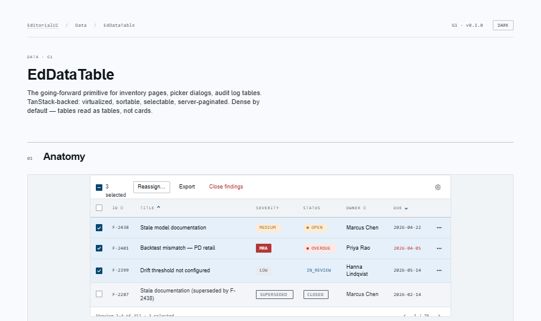
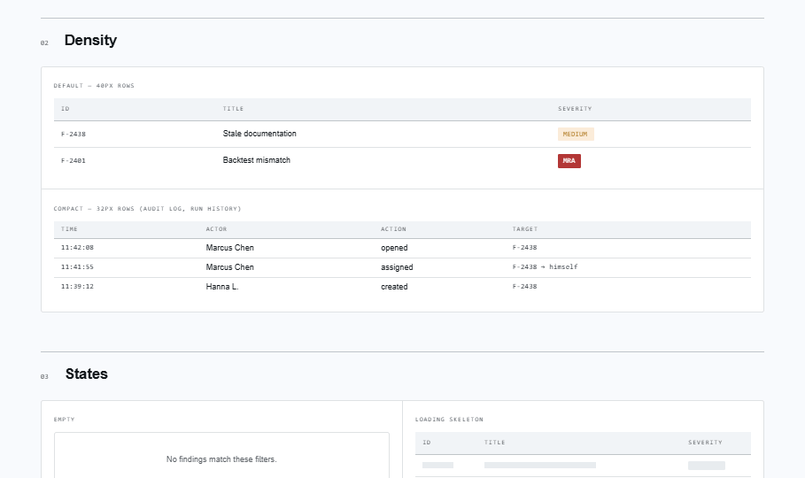
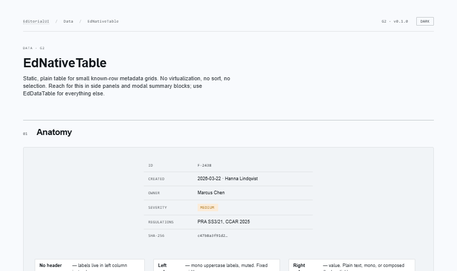
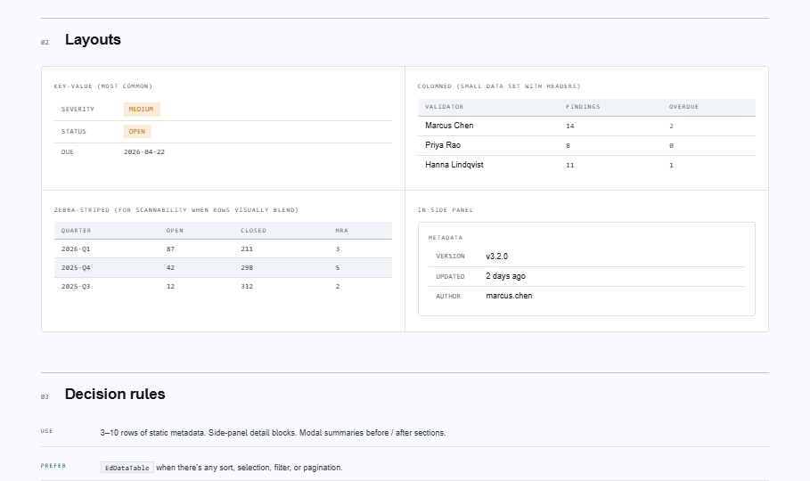
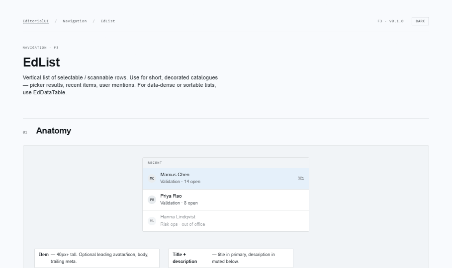
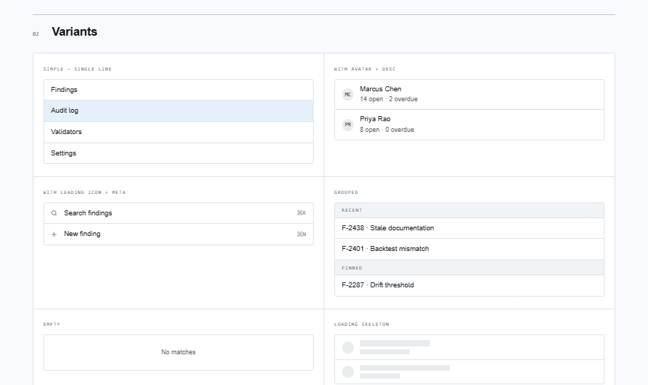

EditorialUI · Implementation
The components that render rows of records: the inventory data table (sort / select / paginate), the static metadata table, and the scannable list. Where the whole system comes together — cells host badges, tags, menus, and drawers from earlier bundles.
apostlerisk. Assumes Bundles 1–7 merged; covers client-vs-server sort/pagination, the TanStack Virtual integration point, and how cells compose earlier-bundle components.
open ↗
Composition bundle: EdDataTable cells host
EdStatusBadge / EdTag (B4), row actions are an
EdMenu (B7), row-click opens an EdDrawer (B6),
and empty/error slots take an EdEmptyState (B5) — all
caller-supplied, so the table still compiles standalone.
Generic, column-config driven inventory table. Per-column sort (client or server), row selection with toolbar + bulk actions, superseded rows, row actions, pagination, density, and empty / loading / error states. Semantic table throughout; virtualize at the call site for >100 rows.


Static plain tables for small known-row sets — no sort/select/virtualization. EdKeyValueTable is the label→value grid (th scope=row) for side panels; EdNativeTable is the columned variant with zebra + custom renderers. Reach for these instead of hand-rolling a table.


Vertical list of selectable / scannable rows — picker results, recent items, entity selectors. Static ul or single-select listbox with arrow-key nav. Leading avatar/icon, title + description, trailing meta (folded into the accessible name), groups, empty + skeleton states.


| Situation | Reach for |
|---|---|
| Inventory page — ≥3 columns or ≥50 rows, sort / select / paginate | EdDataTable |
| 3–10 rows of static metadata (side panel, modal summary) | EdKeyValueTable / EdNativeTable |
| Picker results, recent items, 1–2 fields, selection is the point | EdList |
| Button-triggered action list | EdMenu (B7) |
| Items expand to reveal content | EdAccordion (B6) |
sort/page props for client-side; pass them (+ onSortChange/onPageChange) for server-paginated tables.table/thead/th scope throughout. Never a card grid in place of a table.EdColumn<Row>[] drives the table — map your data, don't nest <Column> elements.onRowClick; the checkbox cell stops propagation.EdKeyValueTable so they inherit type / spacing / dark-mode.EdDateRangePicker, EdFilterChipRow,
EdTagContainer, EdTagSelect. These stitch together
primitives from Bundles 2–8 — the filter chip row sits above this bundle's
data table; tag select builds on the combobox + tag.